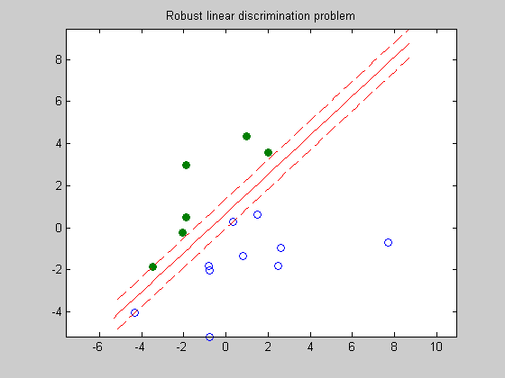

Figure 8.9: Robust linear discrimination problem
n = 2;
randn('state',3);
N = 10; M = 6;
Y = [1.5+1*randn(1,M); 2*randn(1,M)];
X = [-1.5+1*randn(1,N); 2*randn(1,N)];
T = [-1 1; 1 1];
Y = T*Y; X = T*X;
cvx_begin
variables a(n) b(1) t(1)
maximize (t)
X'*a - b >= t;
Y'*a - b <= -t;
norm(a) <= 1;
cvx_end
linewidth = 0.5;
t_min = min([X(1,:),Y(1,:)]);
t_max = max([X(1,:),Y(1,:)]);
tt = linspace(t_min-1,t_max+1,100);
p = -a(1)*tt/a(2) + b/a(2);
p1 = -a(1)*tt/a(2) + (b+t)/a(2);
p2 = -a(1)*tt/a(2) + (b-t)/a(2);
graph = plot(X(1,:),X(2,:), 'o', Y(1,:), Y(2,:), 'o');
set(graph(1),'LineWidth',linewidth);
set(graph(2),'LineWidth',linewidth);
set(graph(2),'MarkerFaceColor',[0 0.5 0]);
hold on;
plot(tt,p, '-r', tt,p1, '--r', tt,p2, '--r');
axis equal
title('Robust linear discrimination problem');
Calling SDPT3: 21 variables, 17 equality constraints
------------------------------------------------------------
num. of constraints = 17
dim. of socp var = 3, num. of socp blk = 1
dim. of linear var = 16
dim. of free var = 2 *** convert ublk to linear blk
*******************************************************************
SDPT3: homogeneous self-dual path-following algorithms
*******************************************************************
version predcorr gam expon
NT 1 0.000 1
it pstep dstep p_infeas d_infeas gap mean(obj) cputime
-------------------------------------------------------------------
0 0.000 0.000 2.0e+00 2.4e+00 2.1e+01 0.000000e+00 0:0:00 chol 1 1
1 1.000 1.000 3.9e-01 4.7e-01 5.0e+00 1.803284e-01 0:0:00 chol 1 1
2 1.000 1.000 1.4e-01 1.6e-01 2.4e+00 -8.188439e-02 0:0:00 chol 1 1
3 0.576 0.576 8.6e-02 1.0e-01 1.8e+00 -3.130562e-01 0:0:00 chol 1 1
4 1.000 1.000 2.6e-02 3.2e-02 6.2e-01 -4.788719e-01 0:0:00 chol 1 1
5 1.000 1.000 3.3e-03 4.0e-03 6.3e-02 -5.055514e-01 0:0:00 chol 1 1
6 0.977 0.977 2.5e-04 3.0e-04 2.7e-03 -5.102206e-01 0:0:00 chol 1 1
7 0.984 0.984 1.4e-05 1.7e-05 6.3e-05 -5.111513e-01 0:0:00 chol 1 1
8 0.986 0.986 7.4e-07 8.8e-07 2.2e-06 -5.112255e-01 0:0:00 chol 1 1
9 1.000 1.000 6.2e-08 7.4e-08 8.8e-07 -5.112297e-01 0:0:00 chol 1 1
10 1.000 1.000 5.8e-09 6.4e-09 7.5e-08 -5.112299e-01 0:0:00 chol
SWM to ill-conditioned, switch to LU factor. lu 1 1
11 1.000 1.000 6.4e-10 5.2e-10 6.3e-09 -5.112299e-01 0:0:00
Stop: max(relative gap, infeasibilities) < 1.49e-08
-------------------------------------------------------------------
number of iterations = 11
primal objective value = -5.11229898e-01
dual objective value = -5.11229897e-01
gap := trace(XZ) = 6.30e-09
relative gap = 4.17e-09
actual relative gap = -4.04e-10
rel. primal infeas = 6.37e-10
rel. dual infeas = 5.17e-10
norm(X), norm(y), norm(Z) = 8.6e+00, 8.1e-01, 9.6e-01
norm(A), norm(b), norm(C) = 1.8e+01, 1.0e+00, 1.4e+00
Total CPU time (secs) = 0.2
CPU time per iteration = 0.0
termination code = 0
DIMACS: 6.4e-10 0.0e+00 5.2e-10 0.0e+00 -4.0e-10 3.1e-09
-------------------------------------------------------------------
------------------------------------------------------------
Status: Solved
Optimal value (cvx_optval): +0.51123
